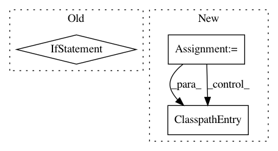

d45af2806326ee71c8f163daea6c0512b58fadd2,src/python/pants/backend/jvm/tasks/resources_task.py,ResourcesTask,execute,#ResourcesTask#,36
Before Change
for conf in self.get_options().confs:
runtime_classpath.add_for_target(vt.target, [(conf, vt.results_dir)])
// And if it was invalid, generate the resources to the chroot.
if not vt.valid:
self.prepare_resources(vt.target, vt.results_dir)
processed_targets.append(vt.target)
vt.update()
return processed_targets
@abstractmethod
def find_all_relevant_resources_targets(self):
After Change
// Generate resources to the chroot.
self.prepare_resources(vt.target, vt.results_dir)
processed_targets.append(vt.target)
for vt, digest in self._capture_resources(invalidation.all_vts):
// Register the target"s chroot in the products.
for conf in self.get_options().confs:
runtime_classpath.add_for_target(vt.target, [(conf, ClasspathEntry(vt.results_dir, digest))])
return processed_targets
def _capture_resources(self, vts):
Given a list of VersionedTargets, capture DirectoryDigests for all of them.
In pattern: SUPERPATTERN
Frequency: 3
Non-data size: 3
Instances
Project Name: pantsbuild/pants
Commit Name: d45af2806326ee71c8f163daea6c0512b58fadd2
Time: 2019-07-28
Author: stuhood@gmail.com
File Name: src/python/pants/backend/jvm/tasks/resources_task.py
Class Name: ResourcesTask
Method Name: execute
Project Name: pantsbuild/pants
Commit Name: f612f023e0e49c18e8f307a8ba647e02b0fb5cb8
Time: 2015-08-11
Author: fedor.korotkov@gmail.com
File Name: src/python/pants/backend/project_info/tasks/ide_gen.py
Class Name: IdeGen
Method Name: map_external_jars
Project Name: pantsbuild/pants
Commit Name: 42f162d1f8cfe9cea6c0c938ffe1f566c5449f1c
Time: 2019-06-07
Author: dawagner@gmail.com
File Name: src/python/pants/backend/jvm/tasks/jvm_compile/rsc/rsc_compile.py
Class Name: RscCompile
Method Name: _runtool_hermetic